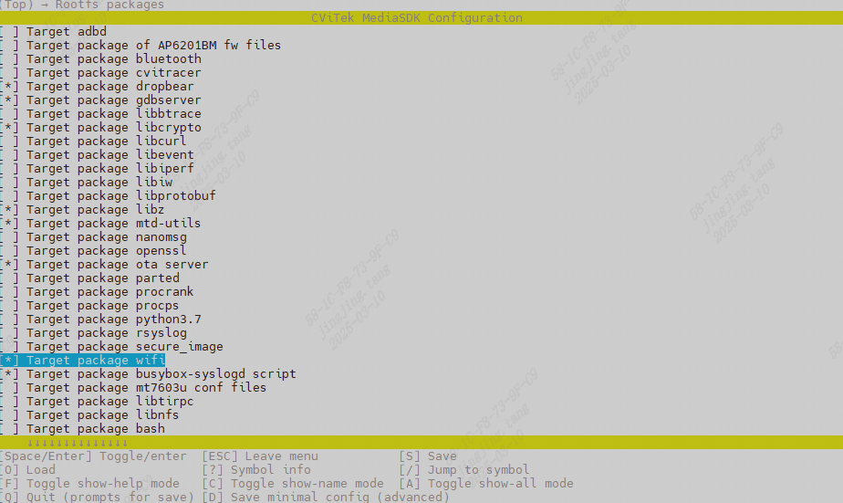

4. Wi-FiTools¶
Operation Wi-Fi Need toUse wpa_supplicant、wpa_cli、hostapd etc. Tools。in CViTek MediaSDK Configuration in Rootfs packages（MenuPathusually Top → Rootfs packages）， need under andWirelessand AP/NAT Relatedof after Configuration， BuildImage：
Target package wifi：will wpa_supplicant、hostapd etc.Insert rootfs（ after needEnable wireless Option）。
Target package iptables (userspace, legacy)：User space iptables；Ifneedin on NAT、Forwarding（ CV184x RTL8189FS WiFi FlowDescription in AP eth0 Uplinketc.Steps），Please and 。
underFigureis Rootfs packages in inof Example（ wifi、iptables etc.； Tablewith Useof SDK is ）：

can Target package wifi afterEnable wireless Option， afterExecuteBuild（andon Rootfs packages Menu）。
{kind=link}


orModifybuild/boards/{chip_name}/{board_name}/{board_name}_defconfigEnableas followsOption， CommandsMode， Executedefconfig $CHIP_$BOARD, with Configuration
#
# Rootfs packages
#
...
CONFIG_TARGET_PACKAGE_WIFI=y
CONFIG_CP_EXT_WIRELESS=y
# end of Rootfs packages
IfUser , can http://w1.fi/releases or http://www.linuxfromscratch.org/blfs/view/svn/basicnet/wireless_tools.html Get，and Install rootfs。
SDK Buildof wpa_supplicant、hostapd etc. ramdisk/rootfs/public/wifi/musl_arm/``（and ``packages_arch=musl_arm ）；from ContentsPackageCopyto ofSteps CV184x RTL8189FS WiFi FlowDescription。